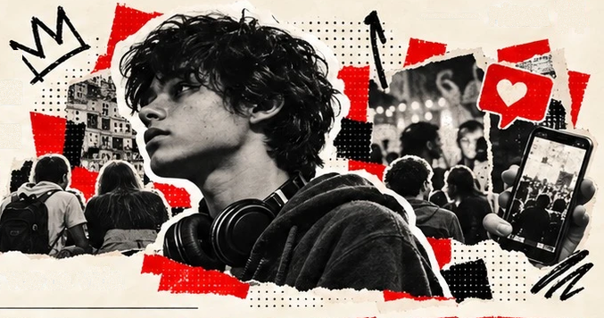
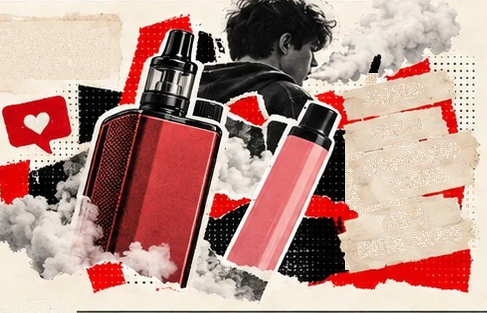
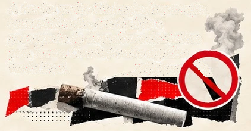

SOB EFEITO
PÁGINA 14
ADOLESCÊNCIA: O QUE MUDOU?
PeNSE — estudantes de 13 a 17 anos · experimentação alguma vez na vida
| INDICADOR | 2019 | 2024 |
|---|---|---|
| Bebida alcoólica | 63,3% | 53,6% |
| Cigarro convencional | 22,6% | 18,5% |
| Cigarro eletrônico | 16,8% | 29,6% |
| Drogas ilícitas | 13,0% | 8,3% |
NÃO. “TUDO AUMENTOU”NÃO É O QUE OS DADOS MOSTRAM.
Entre os quatro indicadores selecionados, três
tiveram queda. O cigarro eletrônico foi a exceção:
16,8% → 29,6%, alta de 12,8 pontos percentuais,
equivalente a cerca de 76% em termos relativos.
O PRODUTO MUDOU DE IMAGEM
Design, sabores e comunicação digital fazem parte
das estratégias documentadas para ampliar o apelo
de produtos de nicotina entre jovens. Isso ajuda a
formular hipóteses, mas o gráfico sozinho não mede
o efeito causal dessas estratégias no Brasil.
- SABORES
- DESIGN
- COMUNICAÇÃO
DIGITAL - APELO
ENTRE JOVENS
PROIBIDO, MAS PRESENTE
A Anvisa proíbe fabricação, importação,
comercialização, distribuição e
propaganda de dispositivos eletrônicos
para fumar. Circulação não significa
venda legal.